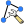

Docs for ‘QGIS testing’. Visit http://docs.qgis.org/2.14 for QGIS 2.14 docs and translations.
Shape Items¶
The Arrow Item¶
To add an arrow, click the Add Arrow icon, place the element holding down the left mouse button and drag a line to draw the arrow on the Print Composer canvas and position and customize the appearance in the scale bar Item Properties tab.
{kind=link}
When you also hold down the Shift key while placing the arrow, it is placed in an angle of exactly 45° .
The arrow item can be used to add a line or a simple arrow that can be used, for example, to show the relation between other print composer items. To create a north arrow, the image item should be considered first. QGIS has a set of North arrows in SVG format. Furthermore you can connect an image item with a map so it can rotate automatically with the map (see The Image Item).
Figure Composer Arrow:
Arrow Item properties Tab
Item Properties¶
The Arrow item properties tab allows you to configure an arrow item.
The [Line style ...] button can be used to set the line style using the line style symbol editor.
In Arrows markers you can select one of three radio buttons.
- Default: To draw a regular arrow, gives you options to style the arrow head
- None: To draw a line without arrow head
- SVG Marker: To draw a line with an SVG Start marker and/or End marker
For Default Arrow marker you can use following options to style the arrow head.
- Arrow outline color: Set the outline color of the arrow head
- Arrow fill color: Set the fill color of the arrow head
- Arrow outline width: Set the outline width of the arrow head
- Arrow head width: Set the size of the arrow head
For SVG Marker you can use following options.
- Start marker: Choose an SVG image to draw at the beginning of the line
- End marker: Choose an SVG image to draw at the end of the line
- Arrow head width: Set the size of Start and/or End marker
SVG images are automatically rotated with the line. Outline and fill colors of QGIS predefined SVG images can be changed using the corresponding options. Custom SVG may require some tags following this instruction.
The Basic Shape Items¶
To add a basic shape (ellipse, rectangle, triangle), click the Add basic shape icon, place the element holding down the left mouse. Customize the appearance in the Item Properties tab.
{kind=link}
When you also hold down the Shift key while placing the basic shape you can create a perfect square, circle or triangle.
Figure Composer Basic Shape:
Shape Item properties Tab
The Shape item properties tab allows you to select if you want to draw an ellipse, rectangle or triangle inside the given frame.
You can set the style of the shape using the advanced symbol style dialog with which you can define its outline and fill color, fill pattern, use markers etcetera.
For the rectangle shape, you can set the value of the corner radius to round of the corners.
Note
Unlike other items, you can not style the frame or the background color of the frame.
The Node-Based Shape Items¶
While arrow and basic shape items offer you simple and predefined geometric item to use, a node-based shape (polygon or polyline) helps you create a custom and more advanced geometric item. You can add as many lines or sides as you want to the item and independently and directly interact with each of its vertices.
To add a node-based shape, click the
 Add nodes item icon. Then perform left clicks to
add nodes to your current shape. When you’re done, a simple right click
terminates the shape. Customize the appearance in the Item Properties
tab.
Add nodes item icon. Then perform left clicks to
add nodes to your current shape. When you’re done, a simple right click
terminates the shape. Customize the appearance in the Item Properties
tab.
Figure Composer Nodes Shape:
Nodes Shape Item properties Tab
You can set the style of the shape using the advanced symbol style dialog available thanks to the [Change ...] button in Main properties.
A specific tool is provided to edit node-based shapes through  Edit Nodes Item. Within this mode, you can select a node by clicking on it (a marker is displayed on the selected node). A selected node can be moved either by dragging it or by using the arrow keys. Moreover, in this mode, you are able to add nodes to an existing shape. You just have to do a left click near a segment and if you are not too far from the shape, a node is added. Finally, you can remove the currently selected node by hitting the DEL key.
{kind=link}